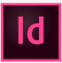
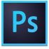

Designer Junior (2023)
Pour le DesignLab Transition
Projet d'étude, conception et fabrication d'une salle de cours Low-tech
à L'ENIB-Brest (en cours)
Designer Junior/Dévellopeur Embryonnaire
29 ans
barbara.vanni@laplaterforme.io
06.03.04.74.16
13009 Marseille
Designer de formation, l’envie d’augmenter mon catalogue d’outils techniques et de découvrir la programmation m’a amené jusqu’à la Plateforme (Marseille) où je suis actuellement en Bachelor-IT 1ère Année.
Pour le DesignLab Transition
Projet d'étude, conception et fabrication d'une salle de cours Low-tech
à L'ENIB-Brest (en cours)
Remplacement designer titulaire
Pour la Région Bretagne au sein de la cellule d'innovation Ti-HUB
Projet Carnet d'inspiration ADN Territorial-Région Bretagne
Atelier de co-conception avec différents destinations phares de Bretagne
Pour l'association Les Manufacteurs
www.lesmanufacteurs.comPour l'association Les Manufacteurs
www.lesmanufacteurs.comProjet Commande Publique de Brest Métropole pour le site des Capucins
Bachelor-IT 1ère Année
Ecole La Plateforme- Marseille (13002)
Formation AWS/restart
Mai 2023 à Août 2023
Formation Amazon Architect Cloud
Ecole La Plateforme- Marseille (13002)
Option Design
Au sein du Master Design en Transition à l'EESAB-Brest
2022
Illustrator
Indesign
Photoshop
Github